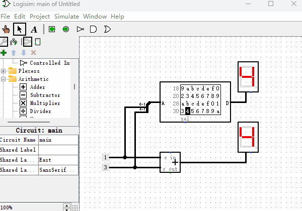

加法器
既然“只读存储器ROM”能够制作“十六进制数码管”，那么我们能不能利用它的映射功能再制作点其它的元件呢？这节我们来制作一个“加法器”，用于我们后面即将制作的计算机系统里。加法器是一种什么样的元件呢？Logisim里就有内置的加法器，它有两个输入端，一个输出端，输出端的结果就是两个输入端二进制数的求和。我现在用内置的加法器给你演示一下，如下图所示。

了解了加法器的功能，现在我们用“只读存储器”来制作一个“加法器”。先举个例子，如果想计算0110+0011的话，我们可以使用一个8位输入端，4位输出端的ROM，然后把两个二进制数字连接到一起，形成一个新的地址01100011，在地址01100011位置提前存储好它们两个相加的值即可。当我们把所有从0000到1111的各种排列组合的加法都提前存储到对应的地址中，加法器就制作完成了。虽然看上去是个很笨拙的办法，但是当加法器数据位数不多的时候，是不成问题的。下面我们看一下4位的加法器所使用的ROM里面是如何存放数据的？如下图所示，我们随机挑选几个地址的值验证下，地址0x00里数据为0x0（以0x开头的数字，代表是十六进制数字），因为0+0=0，所以值也是0。地址0x43里数据为0x7，0x43的二进制为01000011，0100+0011等于0111，即0x7。
